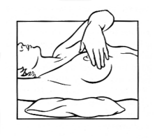
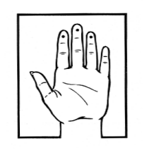
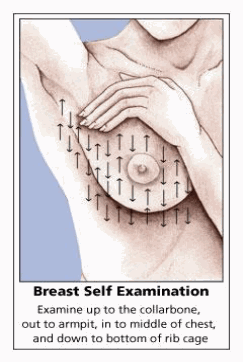

Breast awareness and self-exam
Beginning in their 20s, women should be told about the benefits and limitations of breast self-exam (BSE). Women should be aware of how their breasts normally look and feel and report any new breast changes to a health professional as soon as they are found. Finding a breast change does not necessarily mean there is a cancer.
A woman can notice changes by knowing how her breasts normally look and feel and feeling her breasts for changes (breast awareness), or by choosing to use a step-by-step approach and using a specific schedule to examine her breasts.
Women with breast implants can do BSE. It may be useful to have the surgeon help identify the edges of the implant so that you know what you are feeling. There is some thought that the implants push out the breast tissue and may make it easier to examine. If you choose to do BSE, the following information provides a step-by-step approach for the exam. The best time for a woman to examine her breasts is when the breasts are not tender or swollen. Women who examine their breasts should have their technique reviewed during their periodic health exams by their health care professional.
It is acceptable for women to choose not to do BSE or to do BSE occasionally. Women who are pregnant or breastfeeding can also choose to examine their breasts regularly.
Women who choose not to do BSE should still know how their breasts normally look and feel and report any changes to their doctor right away.
How to examine your breasts
Lie down on your back and place your right arm behind your head. The exam is done while lying down, not standing up. This is because when lying down the breast tissue spreads evenly over the chest wall and is as thin as possible, making it much easier to feel all the breast tissue.
Use the finger pads of the 3 middle fingers on your left hand to feel for lumps in the right breast. Use overlapping dime-sized circular motions of the finger pads to feel the breast tissue.
Use 3 different levels of pressure to feel all the breast tissue. Light pressure is needed to feel the tissue closest to the skin; medium pressure to feel a little deeper; and firm pressure to feel the tissue closest to the chest and ribs. It is normal to feel a firm ridge in the lower curve of each breast, but you should tell your doctor if you feel anything else out of the ordinary. If you're not sure how hard to press, talk with your doctor or nurse. Use each pressure level to feel the breast tissue before moving on to the next spot.



Move around the breast in an up and down pattern starting at an imaginary line drawn straight down your side from the underarm and moving across the breast to the middle of the chest bone (sternum or breastbone). Be sure to check the entire breast area going down until you feel only ribs and up to the neck or collar bone (clavicle).
There is some evidence to suggest that the up-and-down pattern (sometimes called the vertical pattern) is the most effective pattern for covering the entire breast without missing any breast tissue.
Repeat the exam on your left breast, putting your left arm behind your head and using the finger pads of your right hand to do the exam.
While standing in front of a mirror with your hands pressing firmly down on your hips, look at your breasts for any changes of size, shape, contour, or dimpling, or redness or scaliness of the nipple or breast skin. (The pressing down on the hips position contracts the chest wall muscles and enhances any breast changes.)
Examine each underarm while sitting up or standing and with your arm only slightly raised so you can easily feel in this area. Raising your arm straight up tightens the tissue in this area and makes it harder to examine.
This procedure for doing breast self-exam is different from previous recommendations. These changes represent an extensive review of the medical literature and input from an expert advisory group. There is evidence that this position (lying down), the area felt, pattern of coverage of the breast, and use of different amounts of pressure increase a woman's ability to find abnormal areas.